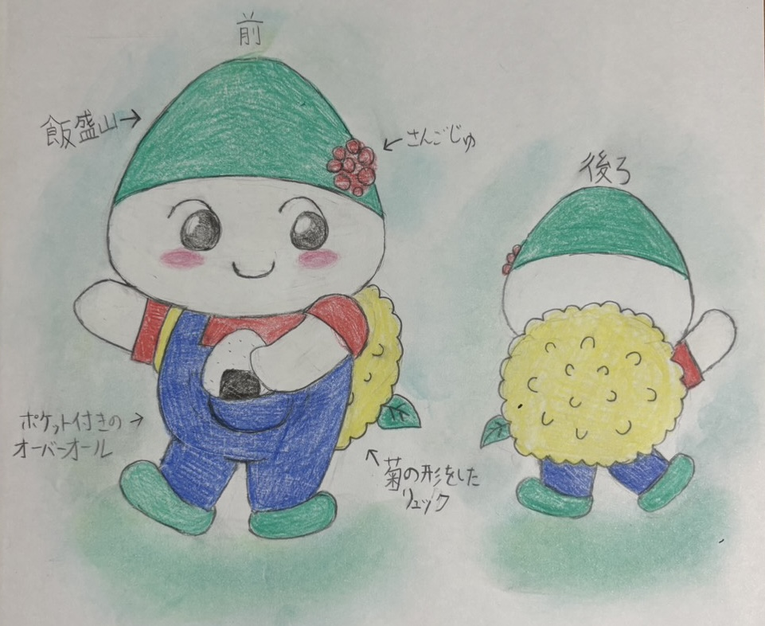

大東JC 55周年記念 公式キャラクターコンテスト
最優秀賞
決定！
67作品の中から、
大東JCメンバー全員の投票で選ばれました！
ご応募いただいたみなさん、
本当にありがとうございました。
👑 最優秀賞
★ GRAND PRIZE ★

いいもりん
プロフィール
デザインの見どころ
飯盛山の帽子
大東市のシンボル、飯盛山の形をした帽子。
さんごじゅの実
市の木「さんごじゅ」の赤い実のかざり。
菊のリュック
市の花「菊」の形をしたリュック。
おにぎり
飯盛山にハイキング。大好物のおにぎりを手に。
色にも意味があります
緑
山
山
青
川
川
赤
太陽
太陽
黄
菊
菊
審査員のコメント
🏅 優秀賞
最終候補3作品に残った作品です。
どちらも審査員から高い評価を受けました。（順不同）
🔍 選考のながれ
たくさんの大人が、一枚一枚を真剣に見て選びました。
67作品
ご応募いただいた全作品
▼ メンバー15名が3項目で採点
10作品
ファイナリスト
▼ 理事6名＋イラストレーターの選考会議
3作品
最終候補
▼ メンバー全員の投票
1作品
👑 最優秀賞「いいもりん」
🎉 これから
公式キャラクター
制作中！
制作中！
最優秀賞の作品をもとに、
プロのイラストレーターさんと一緒に、
大東JCの公式キャラクターをつくっています。
完成したキャラクターのお披露目は
10月下旬！
おたのしみに！
プロのイラストレーターさんと一緒に、
大東JCの公式キャラクターをつくっています。
完成したキャラクターのお披露目は
10月下旬！
おたのしみに！
5月中旬 〜 6月中旬
応募受付 ✔ 67作品！
6月下旬 〜 7月下旬
選考・選考会議 ✔
8月中旬 〜 8月下旬
メンバー投票・最優秀賞決定 ✔ このページ！
8月下旬 〜 9月
イラストレーターによる制作
10月下旬
公式キャラクター お披露目！
🎨 全応募作品
ご応募いただいた全67作品を紹介します！
どの作品も素敵なアイデアがいっぱいです。
▲ カードをタップするとプロフィールが見られるよ